Chapter 14: Forecasting from Launch to Loss of Exclusivity
This notebook executes the Chapter 14 forecasting chain: pre-launch business case, in-market scorecard, demand-supply reconciliation, loss of exclusivity, and consensus scenarios.
14.1 Forecasting Decisions
Listing: Load the lifecycle series
from pathlib import Path
import sys
import pandas as pd
ROOT = Path.cwd()
if not (ROOT / "ch14_forecasting").exists():
ROOT = ROOT.parent
SCRIPT_DIR = ROOT / "ch14_forecasting" / "scripts"
sys.path.insert(0, str(SCRIPT_DIR))
from run_analysis import run_analysis
results = run_analysis()
national = results["national_series"]
observed = results["observed_series"]
print(observed[["week_start", "nbrx", "trx"]].tail().round(1))
12:29:38 - cmdstanpy - INFO - Chain [1] start processing
12:29:38 - cmdstanpy - INFO - Chain [1] done processing
12:29:38 - cmdstanpy - INFO - Chain [1] start processing
12:29:38 - cmdstanpy - INFO - Chain [1] done processing
Seed set to 1
GPU available: False, used: False
TPU available: False, using: 0 TPU cores
| Name | Type | Params | Mode
-----------------------------------------------------------------------------
0 | loss | MAE | 0 | train
1 | padder_train | ConstantPad1d | 0 | train
2 | scaler | TemporalNorm | 0 | train
3 | embedding | TFTEmbedding | 128 | train
4 | temporal_encoder | TemporalCovariateEncoder | 39.6 K | train
5 | temporal_fusion_decoder | TemporalFusionDecoder | 18.0 K | train
6 | output_adapter | Linear | 33 | train
-----------------------------------------------------------------------------
57.8 K Trainable params
0 Non-trainable params
57.8 K Total params
0.231 Total estimated model params size (MB)
88 Modules in train mode
0 Modules in eval mode
`Trainer.fit` stopped: `max_steps=300` reached.
GPU available: False, used: False
TPU available: False, using: 0 TPU cores
Warning: You are sending unauthenticated requests to the HF Hub. Please set a HF_TOKEN to enable higher rate limits and faster downloads.
week_start nbrx trx
47 2025-01-27 125.0 346.0
48 2025-02-03 101.1 380.0
49 2025-02-10 98.8 365.1
50 2025-02-17 112.9 413.1
51 2025-02-24 102.7 456.2
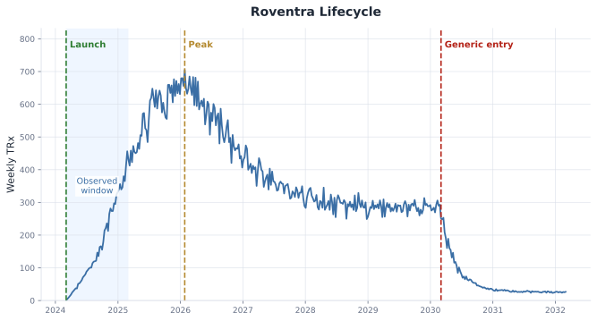
Figure 14.1. Roventra lifecycle series with launch, observed window, peak, and generic entry marked. Synthetic data.
14.2 Sizing the Launch
Listing: The pre-launch funnel ceiling
from forecasting import patient_based_forecast
business_case = patient_based_forecast()
print(pd.Series(business_case).to_string())
addressable_patients 20000.00
access_adjustment 0.78
brand_share 0.30
ceiling 4680.00
Listing: Reconstructing on-therapy stock from observed NBRx
from forecasting import persistence_to_trx
reconstructed = persistence_to_trx(observed["nbrx"].to_numpy())
reconstructed["cumulative_nbrx"] = reconstructed["nbrx"].cumsum()
reconstructed = reconstructed[["nbrx", "cumulative_nbrx", "on_therapy_stock"]]
print(reconstructed.tail().round(1))
nbrx cumulative_nbrx on_therapy_stock
47 125.0 2683.8 1541.1
48 101.1 2784.9 1576.4
49 98.8 2883.7 1607.1
50 112.9 2996.6 1650.1
51 102.7 3099.3 1680.9
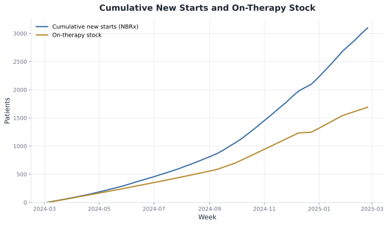
Figure 14.2. Cumulative new starts and on-therapy stock over the observed window.
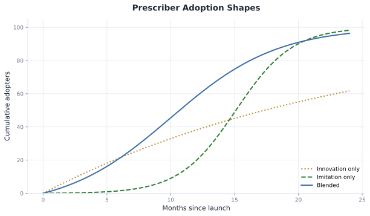
Figure 14.3. Prescriber innovation, imitation, and blended adoption shapes.
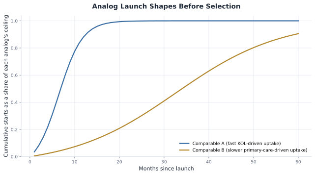
Figure 14.4. Comparable A and Comparable B normalized adoption shapes over 60 months, before selection.
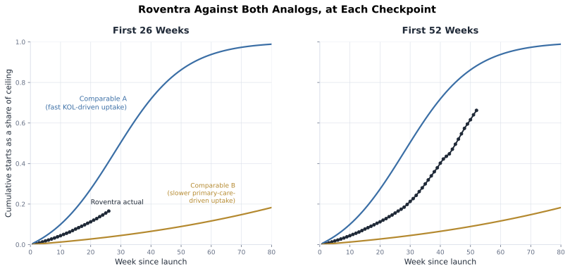
Figure 14.5. Roventra's normalized uptake overlaid against both analog curves at 26 weeks (left) and 52 weeks (right).
Listing: Fitting Bass diffusion to the observed launch data
from forecasting import fit_bass
weeks_since_launch = (observed["week_start"] - national["week_start"].iloc[0]).dt.days / 7.0
months_since_launch = (weeks_since_launch * 12.0 / 52.0).to_numpy()
cumulative_starts = observed["nbrx"].cumsum().to_numpy()
bass_fit = fit_bass(months_since_launch, cumulative_starts)
print(pd.Series(bass_fit).round(3).to_string())
p 0.008
q 0.244
m 8470.418
time_to_peak_months 13.557
peak_monthly_new_starts 550.468
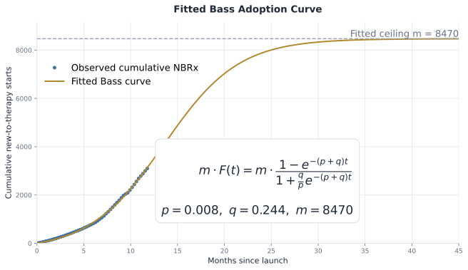
Figure 14.6. Fitted Bass adoption curve against Roventra's observed cumulative NBRx, projected to month 20.
14.3 In-Market Demand
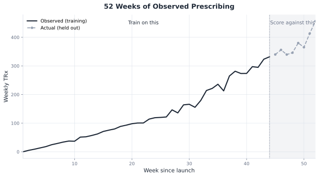
Figure 14.7. 52 weeks of observed prescribing: 44 weeks to train on, the last 8, shaded, held out and scored against.
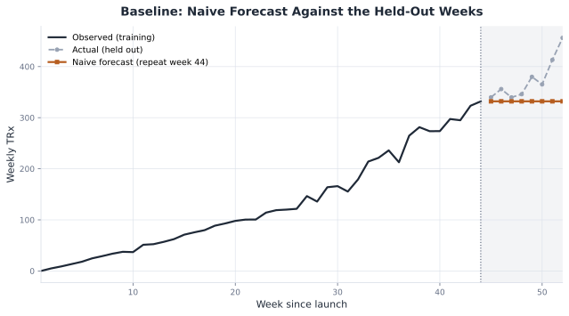
Figure 14.8. The naive forecast against the held-out weeks: a flat line against a still-climbing launch.
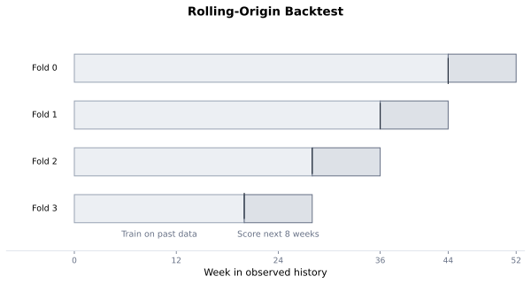
Figure 14.9. Four backtest folds, each training on the gray span and testing on the darker span that immediately follows it.
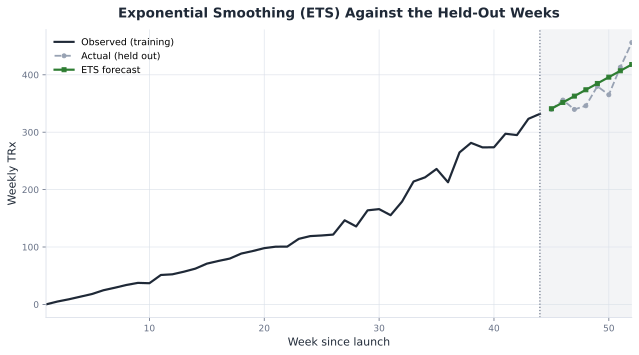
Figure 14.10. The ETS forecast tracks the held-out weeks closely, level and trend alone.
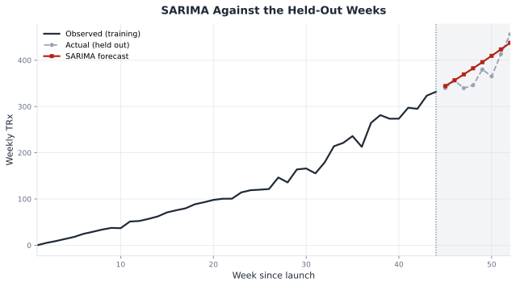
Figure 14.11. SARIMA against the held-out weeks: a reasonable track that drifts slightly high late in the window.
Listing: Prophet with and without the access and promotion covariates
holdout = 8
ds_y = observed.rename(columns={"week_start": "ds", "trx": "y"})
covariate_columns = ["access_multiplier", "promo_multiplier"]
train = ds_y.iloc[:-holdout].reset_index(drop=True)
future_covariates = ds_y.iloc[-holdout:][covariate_columns].reset_index(drop=True)
from forecasting import fit_prophet
without_covariates = fit_prophet(train, horizon=holdout)
with_covariates = fit_prophet(
train, horizon=holdout, covariate_columns=covariate_columns, future_covariates=future_covariates
)
print(without_covariates[:3].round(1))
print(with_covariates[:3].round(1))
INFO:prophet:Disabling yearly seasonality. Run prophet with yearly_seasonality=True to override this.
DEBUG:cmdstanpy:input tempfile: /var/folders/zw/cjrh8l_12zxfdkryd1brvm9m0000gn/T/tmpsoahb0gb/2brgqikk.json
DEBUG:cmdstanpy:input tempfile: /var/folders/zw/cjrh8l_12zxfdkryd1brvm9m0000gn/T/tmpsoahb0gb/c1s68hkn.json
DEBUG:cmdstanpy:idx 0
DEBUG:cmdstanpy:running CmdStan, num_threads: None
DEBUG:cmdstanpy:CmdStan args: ['/Users/qiu/Projects/hands-on-pharma-decision-science/.venv/lib/python3.12/site-packages/prophet/stan_model/prophet_model.bin', 'random', 'seed=44960', 'data', 'file=/var/folders/zw/cjrh8l_12zxfdkryd1brvm9m0000gn/T/tmpsoahb0gb/2brgqikk.json', 'init=/var/folders/zw/cjrh8l_12zxfdkryd1brvm9m0000gn/T/tmpsoahb0gb/c1s68hkn.json', 'output', 'file=/var/folders/zw/cjrh8l_12zxfdkryd1brvm9m0000gn/T/tmpsoahb0gb/prophet_modelftllqmas/prophet_model-20260707123020.csv', 'method=optimize', 'algorithm=newton', 'iter=10000']
12:30:20 - cmdstanpy - INFO - Chain [1] start processing
INFO:cmdstanpy:Chain [1] start processing
12:30:20 - cmdstanpy - INFO - Chain [1] done processing
INFO:cmdstanpy:Chain [1] done processing
INFO:prophet:Disabling yearly seasonality. Run prophet with yearly_seasonality=True to override this.
DEBUG:cmdstanpy:input tempfile: /var/folders/zw/cjrh8l_12zxfdkryd1brvm9m0000gn/T/tmpsoahb0gb/hgwdeiun.json
DEBUG:cmdstanpy:input tempfile: /var/folders/zw/cjrh8l_12zxfdkryd1brvm9m0000gn/T/tmpsoahb0gb/il9ayube.json
DEBUG:cmdstanpy:idx 0
DEBUG:cmdstanpy:running CmdStan, num_threads: None
DEBUG:cmdstanpy:CmdStan args: ['/Users/qiu/Projects/hands-on-pharma-decision-science/.venv/lib/python3.12/site-packages/prophet/stan_model/prophet_model.bin', 'random', 'seed=46392', 'data', 'file=/var/folders/zw/cjrh8l_12zxfdkryd1brvm9m0000gn/T/tmpsoahb0gb/hgwdeiun.json', 'init=/var/folders/zw/cjrh8l_12zxfdkryd1brvm9m0000gn/T/tmpsoahb0gb/il9ayube.json', 'output', 'file=/var/folders/zw/cjrh8l_12zxfdkryd1brvm9m0000gn/T/tmpsoahb0gb/prophet_modelfp_3uyim/prophet_model-20260707123020.csv', 'method=optimize', 'algorithm=newton', 'iter=10000']
12:30:20 - cmdstanpy - INFO - Chain [1] start processing
INFO:cmdstanpy:Chain [1] start processing
12:30:20 - cmdstanpy - INFO - Chain [1] done processing
INFO:cmdstanpy:Chain [1] done processing
[339.4 350.8 362.1]
[308.7 319.2 329.7]
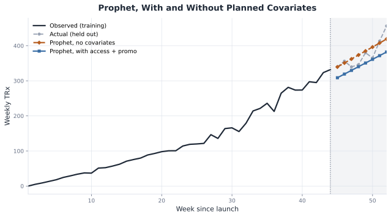
Figure 14.12. Prophet with and without the planned access and promotion covariates, against the held-out weeks.
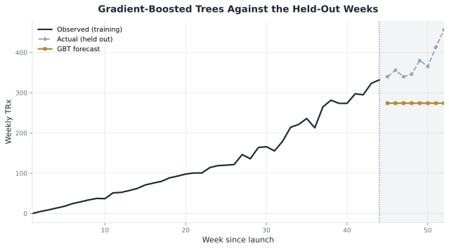
Figure 14.13. Gradient-boosted trees against the held-out weeks: a nearly flat line against a still-climbing launch.
Listing: Training the TFT across the territory panel
holdout = 8
tft_forecast = results["holdout_forecasts"]["tft"].to_numpy()
print(tft_forecast.round(1))
[359.9 387.1 412.5 433.9 456.5 484.3 510.5 535.4]
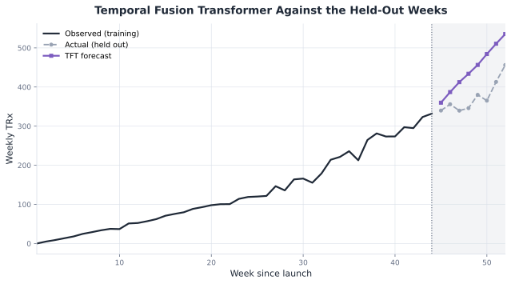
Figure 14.14. The Temporal Fusion Transformer overshoots the held-out weeks and keeps climbing.
Listing: Zero-shot forecasts from Chronos and TimesFM
chronos_result = results["chronos_forecast"]
timesfm_result = results["holdout_forecasts"]["timesfm"].to_numpy()
print(chronos_result["median"].round(1).to_numpy())
print(timesfm_result.round(1))
[341.6 355.1 356.1 374.4 383.5 390.7 395.1 404.2]
[344.3 354.7 368.9 378.9 375.4 389.2 401.8 405.6]
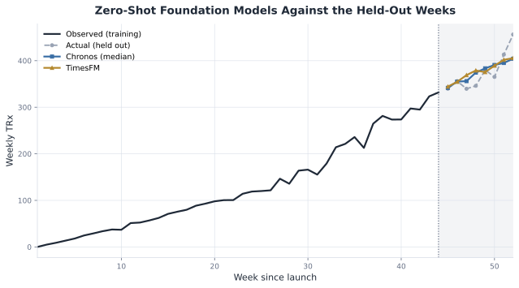
Figure 14.15. Chronos and TimesFM against the held-out weeks, with no training on Roventra data at all.
Listing: The full accuracy scorecard
scorecard = results["in_market_scorecard"]
print(scorecard.round({"mae": 1, "wmape": 3, "mape": 3, "mase": 2}))
method mae wmape mape mase
0 ets 17.4 0.064 0.070 0.36
1 chronos 18.3 0.049 0.047 0.37
2 timesfm 19.8 0.053 0.052 0.40
3 sarima 27.1 0.100 0.104 0.55
4 prophet 29.0 0.078 0.074 0.59
5 naive 48.9 0.180 0.186 1.00
6 seasonal_naive 48.9 0.180 0.186 1.00
7 tft 73.0 0.195 0.194 1.49
8 gbt 100.4 0.268 0.261 2.05
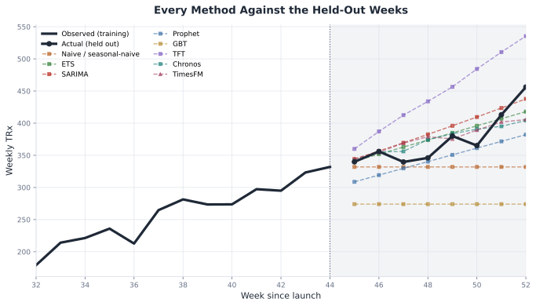
Figure 14.16. Every method against the held-out weeks, on one chart, colored to match its earlier dedicated figure.
Listing: A calibrated interval around the ETS forecast
from forecasting import conformal_interval, empirical_coverage
classical_backtest = results["in_market_backtest"]
holdout_forecasts = results["holdout_forecasts"]
actual_holdout = results["holdout_actual"]["actual"].to_numpy()
calibration_backtest = classical_backtest.loc[classical_backtest["method"] == "naive"]
interval = conformal_interval(calibration_backtest, holdout_forecasts["ets"], alpha=0.20)
coverage = empirical_coverage(interval, actual_holdout)
print(interval.round(1))
print(f"empirical coverage: {coverage:.0%}")
point_forecast lower upper half_width
horizon_step
1 340.8 259.5 422.2 81.4
2 351.8 270.5 433.2 81.4
3 362.8 281.5 444.2 81.4
4 373.9 292.5 455.2 81.4
5 384.9 303.5 466.2 81.4
6 395.9 314.5 477.3 81.4
7 406.9 325.6 488.3 81.4
8 417.9 336.6 499.3 81.4
empirical coverage: 100%
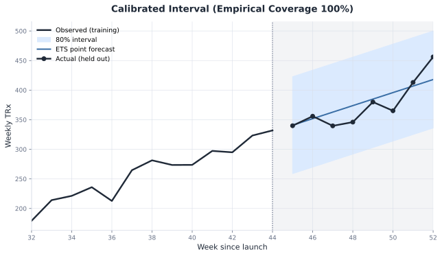
Figure 14.17. The calibrated 80% interval around the ETS point forecast, with the actual holdout overlaid.
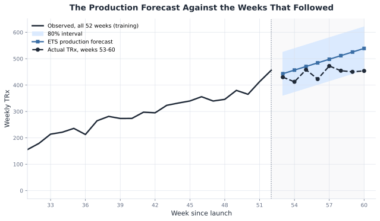
Figure 14.18. The ETS production forecast against the weeks that actually followed: a straight-line extrapolation against a launch approaching its peak.
14.4 Demand-Supply Planning
Listing: Independent base forecasts by level
hierarchy_base_forecast = results["hierarchy_base_forecast"]
print(hierarchy_base_forecast.iloc[0].round(1).to_string())
National 443.2
MI-T1 93.9
MI-T2 2.7
MI-T3 10.0
NO-T1 46.5
NO-T2 67.2
NO-T3 3.7
SO-T1 37.6
SO-T2 34.3
SO-T3 62.4
WE-T1 7.2
WE-T2 58.0
WE-T3 7.3
Listing: All 3 reconciliation methods against the unreconciled base forecasts
from forecasting import reconcile
hierarchy_base = {
column: hierarchy_base_forecast[column].to_numpy()
for column in hierarchy_base_forecast.columns
}
territory_order = [column for column in hierarchy_base if column != "National"]
territory_shares = results["territory_historical_shares"]
bottom_up = reconcile(hierarchy_base, territory_order, method="bottom_up")
top_down = reconcile(hierarchy_base, territory_order, method="top_down", historical_shares=territory_shares)
ols = reconcile(hierarchy_base, territory_order, method="ols")
comparison = pd.DataFrame({
"Unreconciled": [hierarchy_base_forecast["National"].iloc[0], sum(hierarchy_base[r][0] for r in territory_order)],
"Bottom-up": [bottom_up.loc["National", "h1"], bottom_up.loc[territory_order, "h1"].sum()],
"Top-down": [top_down.loc["National", "h1"], top_down.loc[territory_order, "h1"].sum()],
"OLS": [ols.loc["National", "h1"], ols.loc[territory_order, "h1"].sum()],
}, index=["National", "Territory sum"])
print(comparison.round(1))
Unreconciled Bottom-up Top-down OLS
National 443.2 431.0 443.2 442.2
Territory sum 431.0 431.0 443.2 442.2
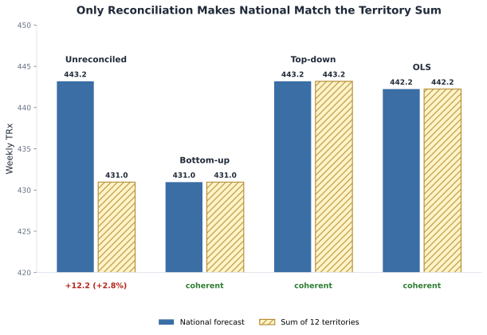
Figure 14.19. Only reconciliation makes the national forecast match the sum of 12 territories; unreconciled leaves a visible gap, every reconciled method closes it, and each closes it at a different shared total.
Listing: Safety stock and the order signal, national level
demand_to_supply = results["demand_to_supply"]
print(demand_to_supply.iloc[0].round(1).to_string())
reconciled_demand 442.2
safety_stock 38.7
order_signal 1807.7
Listing: Safety stock and the order signal, by territory
demand_to_supply_by_territory = results["demand_to_supply_by_territory"]
print(demand_to_supply_by_territory.round(1))
reconciled_demand safety_stock order_signal
territory
MI-T1 94.8 17.8 397.1
MI-T2 3.7 0.5 15.2
MI-T3 11.0 1.6 45.5
NO-T1 47.4 8.9 198.6
NO-T2 68.2 12.1 284.8
NO-T3 4.6 0.8 19.3
SO-T1 38.6 8.9 163.2
SO-T2 35.3 8.1 149.2
SO-T3 63.3 12.8 266.2
WE-T1 8.2 1.3 33.9
WE-T2 58.9 10.8 246.5
WE-T3 8.2 1.2 34.0
14.5 Loss of Exclusivity
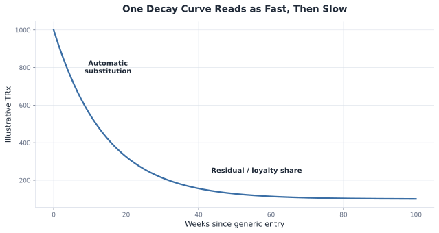
Figure 14.20. A single half-life decay curve, reading fast in the early weeks and slow near its residual floor, with no break in the curve itself.
Listing: Compare 2 analog erosion shapes from the same pre-entry level
analog_erosion = results["analog_erosion_comparison"]
comparison = analog_erosion.loc[analog_erosion["weeks_since_entry"].isin([12.0, 52.0])].copy()
comparison["weeks_since_entry"] = comparison["weeks_since_entry"].astype(int)
comparison = comparison.rename(columns={
"Comparable erosion A (fast generic substitution)": "Comparable A",
"Comparable erosion B (slower substitution, branded loyalty)": "Comparable B",
})
print(comparison.round(1).to_string(index=False))
weeks_since_entry Comparable A Comparable B
12 77.7 169.4
52 20.6 71.2
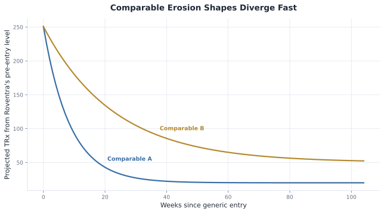
Figure 14.21. Comparable erosion A and Comparable erosion B projected from the same pre-entry level.
Listing: Fitting the decline on 20 weeks of post-entry data, then on 78
from forecasting import fit_erosion
erosion_tail = results["erosion_tail"]
weeks_since_entry = erosion_tail["weeks_since_entry"].to_numpy()
trx_tail = erosion_tail["trx"].to_numpy()
early_fit = fit_erosion(weeks_since_entry[:20], trx_tail[:20])
mature_fit = fit_erosion(weeks_since_entry[:78], trx_tail[:78])
fit_comparison = pd.DataFrame(
{
"residual_fraction": [early_fit["residual_fraction"], mature_fit["residual_fraction"]],
"half_life_weeks": [early_fit["half_life_weeks"], mature_fit["half_life_weeks"]],
},
index=["fit on 20 weeks", "fit on 78 weeks"],
).round({"residual_fraction": 4, "half_life_weeks": 1})
print(fit_comparison.to_string())
residual_fraction half_life_weeks
fit on 20 weeks 0.0010 10.7
fit on 78 weeks 0.1028 9.0
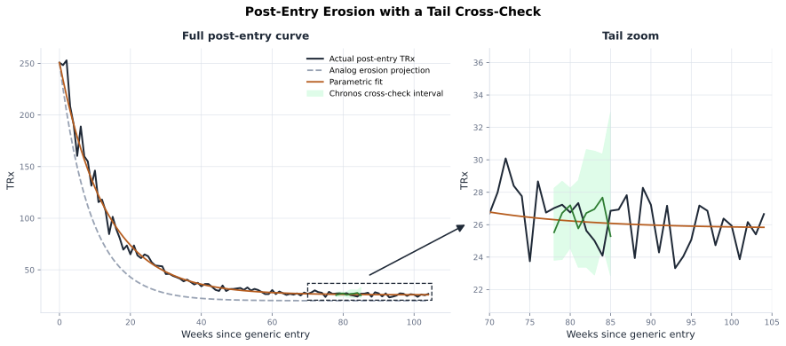
Figure 14.22. Actual post-entry TRx, the analog erosion band, and the Chronos zero-shot cross-check, with the right panel zooming the tail.
14.6 Consensus and Scenario Forecast
Listing: An accuracy-weighted consensus
from forecasting import ensemble_consensus
consensus_base = {
"patient_based": [results["patient_based_forecast"].iloc[0]["ceiling"] / 12.0] * 8,
"ets": results["production_forecast"]["forecast"].to_numpy(),
"chronos": results["chronos_production_forecast"]["forecast"].to_numpy(),
}
consensus = ensemble_consensus(consensus_base, scorecard)
consensus_table = pd.DataFrame({"horizon_step": range(1, 9), "consensus": consensus})
print(consensus_table.round({"consensus": 1}).to_string(index=False))
horizon_step consensus
1 448.7
2 456.4
3 468.8
4 479.3
5 488.0
6 499.8
7 507.8
8 519.6
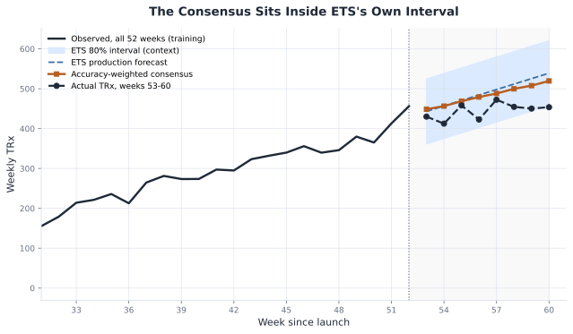
Figure 14.23. The consensus, blended from patient-based, ETS, and Chronos, sits inside ETS's own 80% interval and tracks the actual continuation more closely than ETS alone.
Listing: The reconciliation waterfall
consensus_waterfall = results["consensus_waterfall"].round({"running_total": 1})
print(consensus_waterfall.to_string(formatters={"adjustment_pct": "{:.3f}".format}))
step adjustment_pct running_total
0 Analytics consensus 0.000 3868.6
1 Access assumption tightened -0.080 3559.1
2 Launch-support level confirmed 0.050 3737.0
3 Competitor entry risk -0.030 3624.9
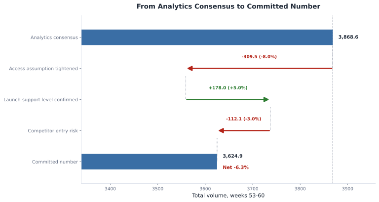
Figure 14.24. From the analytics consensus to the committed number: each adjustment shown as both a volume delta and the percentage that produced it, against a reference line at the starting total.
Listing: Low, Base, and High scenarios
from forecasting import scenario_forecast
print(scenario_forecast())
scenario addressable_patients access_adjustment brand_share ceiling
0 Low 16000 0.65 0.2 2080.0
1 Base 20000 0.78 0.3 4680.0
2 High 24000 0.85 0.4 8160.0
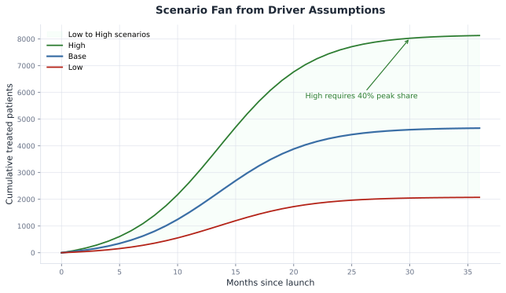
Figure 14.25. Low, Base, and High launch scenarios form a fan from explicit driver assumptions.
14.7 A Forecasting Method Selection Field Guide
Gather these inputs before reusing any method in this chapter on a live brand:
- target series and unit, such as NBRx, TRx, units, or dollars
- forecast horizon and cadence
- known future events and covariates
- hierarchy levels that must reconcile
- enough backtest folds to score without leakage
- quantified business adjustments, traceable back to a specific driver
Table 14.2 (methods used in this chapter) and Table 14.3 (common pharma-forecasting methods this chapter did not need) in the manuscript turn this into a practical selection rule.
Interval recap: - pre-launch business case: a Monte Carlo band over the funnel's own assumption ranges - in-market demand: a conformal interval calibrated from real backtest residuals - loss of exclusivity: an analog band, then a Chronos cross-check - supply planning: a safety-stock buffer sized to each territory's own volatility - consensus: driver-based low, base, and high scenarios, not a statistical band
14.8 Revising the Forecast
A forecast earns its keep by being corrected as real data arrives, not by being right the first time: re-fit as prescribing accumulates, backtest on a fixed schedule so a materially better challenger method replaces the incumbent, reconcile a hierarchy every cycle rather than once, and keep every business adjustment on the consensus named and traceable. Real pharma demand-forecasting functions run this whole loop, monthly or quarterly, inside the S&OP (sales and operations planning) cycle that brings commercial, finance, and supply planning to the same table. See the manuscript's 14.8 for the full stage-by-stage discussion.
14.9 Summary
This chapter built a forecast for every stage of the Roventra lifecycle, from a pre-launch business case with no data at all to a post-generic decline years in the future. The transferable lesson is the thinking, not any specific number this fictional brand produced: trust an assumption only until data exists to check it, let a method earn its place through an honest backtest, don't trust a decline curve before its tail shows itself, reconcile a hierarchy because independent good models won't agree by default, and keep every business adjustment named and traceable.